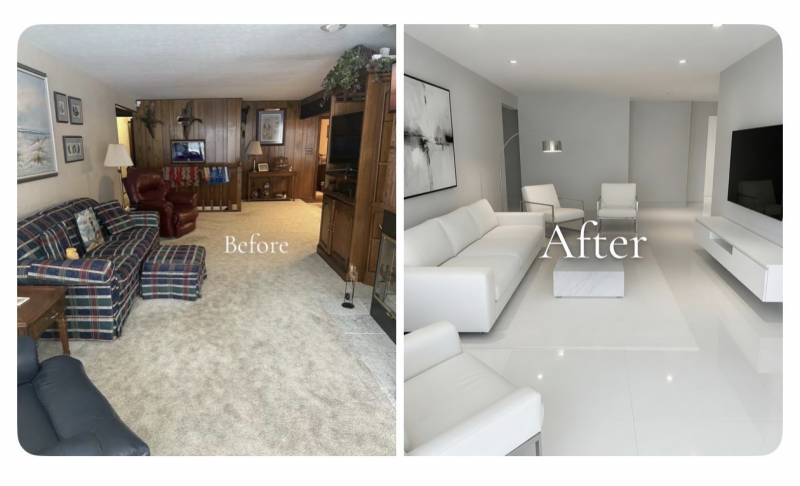

오른쪽은 외국인들한테 정신병동 입구쯤으로 느껴진대

오른쪽은 외국인들한테 정신병동 입구쯤으로 느껴진대
결벽증이든 뭐든 정신적으로 뭐가 있을만한느낌이긴한데
왼쪽은 난잡함보다는 그래도 괜찮다 생각함
오른쪽도 구리긴한데 왼쪽은 70년대 인테리어같은데 ㅋㅋㅋ
너무 하얀것도 좀 파스텔 제품정도는 채워야 사람 사는거 같음
오른쪽은 너무 하얗고 살짝 톤다운 시켜서 포인트로 메이플우드나 월넛 들어가면 예쁨
오른쪽 보며 궁시렁대는 사람들을 위해!
체리목 색깔 걸레받이와 천장 몰딩을 준비했습니다!
핑크 변기나 연두 변기 중 고르시구요,
핑크 변기 고르셨으면 화장실은 자주색타일로 깔맞춤 해드립니다!
오른쪽 인테리어도…험난한 길을 뚫고 완성된 인테리어란 것을 잊지말도록..
체리목은 너무 화려해서 옥색으로 부탁드려요
체리목 욕조에서 목욕하며 푸근한 느낌 들어서 좋던데
침실은 간접조명으로 채웠으면 좋겠어 간접조명 조아
온 집안이 led인집은 너무 밝아서 저녁에 살짝 정병올꺼같음
오른쪽 같은게 유행이긴한데
너무 깔끔해서 못 어지르겠음 ㅋㅋㅋ
집이 아니라 카페에 있는 느낌임
그렇다면 집을 카페로 만드는 방향으로
그건 애 있으면 애가 해결해줌
난 화이트톤 좋음
화이트톤에 간간이 우드톤으로 포인트를 줘야함
오른쪽은 좀 철지난 유행이지.. 번쩍거리는 포세린타일에 흰색 둘둘.. 요즘 돈좀 쓰는 인테리어는 저렇게 안함.
때 겁나 잘탈거 같아서 별로다 ㅋㅋ
오른쪽은 한국인들이 선호하는 인테리어지 외국에선 인기 없음
기괴하다
오른쪽은 처음에 저렇게 만들어놓으니 그렇게 보이지 살면서 물건 몇개 놓이고 나면 자연스러워짐. 에이징이 필요한 인테리어여
외국인ㅋㅋㅋ존나 넓은 표현이네
어느나라임마 ㅋㅋ
오른쪽은 너무 숨막히는데
바닥까지 저러니까 뭔 신축 피부과 같네
근데 나도 좌측이 더 집 같은 느낌이라 좋음
우측은 잠깐 들를 수 있는 곳일 때가 좋지
이새키들이 다시 체리몰딩 둘러줘야 정신 차릴래?
오른쪽에 생활감있게 리모컨 하나만 있어도 마음이 편안해짐
우측은 너무 화이트로 범벅이라 그런듯
가구로 좀 죽여줘야 보기 좋을듯
왼쪽 바닥 카페트 극혐 으으
오른쪽은 ㄹㅇ과하잖아 ㅋㅋ
ㅋㅋㅋㅋㅋ 외국인들 한국 성형외과 가면 정신병동 같아서 놀란다고 함
나는 좋은데
바닥이랑 그림이 ㄹㅇ 끔찍하긴함
미국 백인기준으론 99% 왼쪽 집이긴 함
내가봐도 왼쪽이 더 나음. 오른쪽은 뭐 고급 성형외과 대기실같음
나도 오른쪽 ㅈㄴ 싫어함
흰색으로 도배해놨네 ㅁㅊ
외국은 목조건축이 많아서 그렇게 느낄 수도 있음.